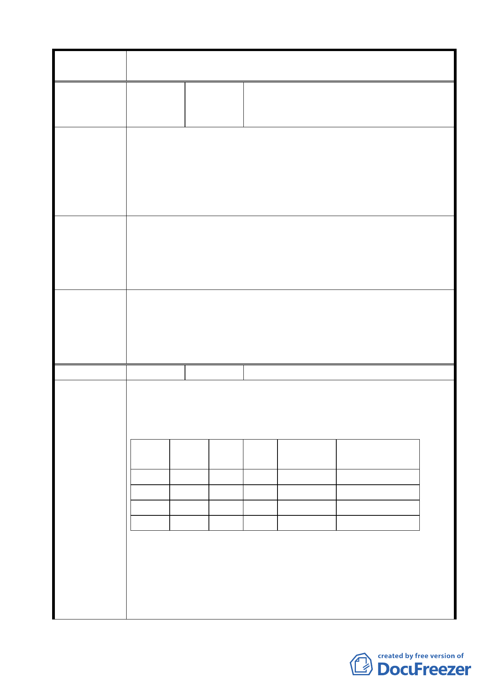

案名
編號
陳情理由
建議辦法
委員會議
決議
編號
陳情理由
變更臺北市士林區陽明山山仔后地區第二種住宅區為特定住宅區
細部計畫案
陽明山國家公園區環境改造協會
15 陳情人 （97/2/20）（附件 97 年 2 月 19 日包含連
署之里長及團體）
陽明山國家公園周邊地區，舊有美軍宿舍開發計畫案，為此
區內環境重大發展，本區各里長、居民、本會及相關團體基於促
進地方良性發展，建議除應保留具歷史意義之建物外，應規劃設
置公共設施（如多功能圖書館、公園綠地等），負起本區教育、休
閒、遊憩之功能。而保六之六屬陽明山最大之住宅開發案，其性
質與議題與美軍宿舍開發計畫完全不同。
舊有美軍宿舍開發案與保六之六開發案，其內容議題均有所
不同，為陽明山國家公園周邊地區環境發展，本區各里里長、居
民及本會共同建議應分開審議，將美軍宿舍開發案先撤銷審議，
並於該案規劃前應先聽取、採納本區里長、居民及相關環保團體
之建議及實際需要，以促進本區環境良性發展。
1.有關本項陳情市府業說明住六之六地區非屬本案計畫範圍。
2.本案除市府本次會議所送修正計畫書第 2-20 頁（四）文字修正
為「建築基地地面高度設計：建築基地地面設計以維持原地形
地面為原則，但經整地後基地地面高度不得超過 1.2 公尺」外，
其餘依市府本次會議所送修正計畫書內容通過。
16 陳情人 張維修
本案依計畫書說明，其核心價值係在於「環境保護、維護公
共利益」，然而，計畫將住二變更為特住一及特住二，在攸關未來
開發利益及環境保護最重要的「容積率、建蔽率」管制內容，並
沒有任何的進步可言，更與計畫緣起與目的相違背。
分區
面積 建蔽率 容積率 可開發樓地板 以住二條件可開發的
（公頃） （％） （％） 面積（公頃） 樓地板面積（公頃）
住二
37.37 35
120
44.844
44.844
特住一
15.82 40
60
9.492
18.984（減少 9.492）
特住二
21.55 40
120
25.86
25.86（不變）
總計
73.63
減少 12.8％
1.特住一與特主二的分區類別未能真實反映目前文化局已登錄的
22 棟歷史建築，以及正在進行中的文化景觀登錄審查程序。已
指定為歷史建築部分應劃設為保存區，其餘部分尚須配合文化
景觀登錄審查程序完成後，再依文資法第 56 條劃設保存區。因
此，此刻以特住一、特住二來處理美軍宿舍分區使用問題，無
法達成環境保護之重要目的，待未來文化景觀登錄審查程序完
42